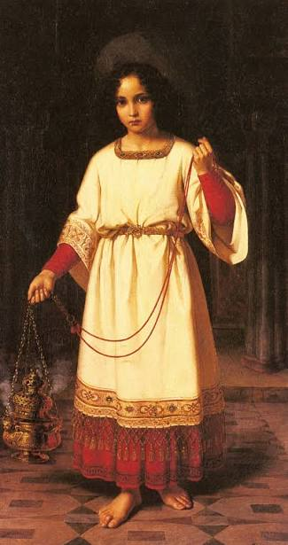
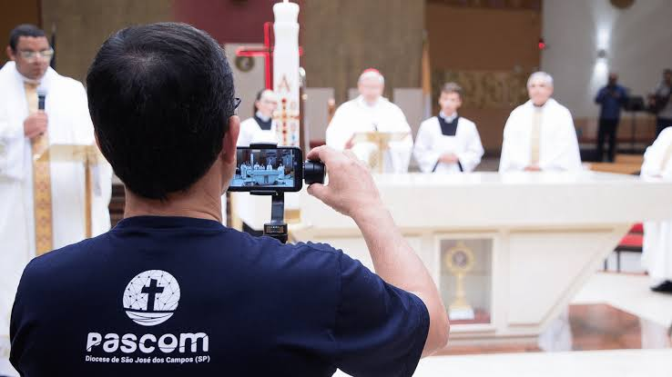

Acólita
Por: Gabriella
No dia em que fui enviada para acólita, descobri uma nova forma de servir e crescer espiritualmente, marcando o início de uma jornada de fé e dedicação.
Vou compartilhar conhecimentos sobre tecnologia e programação

Por: Gabriella
No dia em que fui enviada para acólita, descobri uma nova forma de servir e crescer espiritualmente, marcando o início de uma jornada de fé e dedicação.
Por: gabriella
Bem-vindo ao meu blog! ✨ Aqui compartilho minha caminhada na Igreja — desde o dia em que fui enviada para ser acólita, até reflexões sobre a importância da PASCOM, que une e fortalece nossa comunidade pela comunicação e pela fé.

Por: Gabriella
Bem vindo ao blog novamente, Entre tantas experiências que marcaram minha vida, uma das mais especiais foi visitar o Santuário de Aparecida. Aquele lugar é simplesmente incrível: imenso em sua beleza, cheio de fé e carregado de uma paz que toca o coração. Caminhar por seus corredores, participar das celebrações e sentir a presença de Nossa Senhora é como mergulhar em um abraço espiritual que renova e fortalece. O Santuário não é apenas um espaço físico, mas um verdadeiro refúgio de paz e encontro com Deus, onde milhares de fiéis se unem em oração e esperança. É impossível sair de lá sem sentir que algo mudou dentro de nós.
.jpg)
Por: Gabriella
✨ Bem-vindo ao meu cantinho na internet! ✨ Aqui compartilho não só minha caminhada na Igreja, mas também o amor imenso que tenho pela minha cachorrinha Fifi, uma doce Shih Tzu que enche meus dias de alegria. Ela é companheira fiel, cheia de carinho e travessuras, e faz parte da minha história tanto quanto minha missão de fé. Este espaço é sobre fé, comunidade e também sobre afeto — porque amar é comunicar vida. 💖.